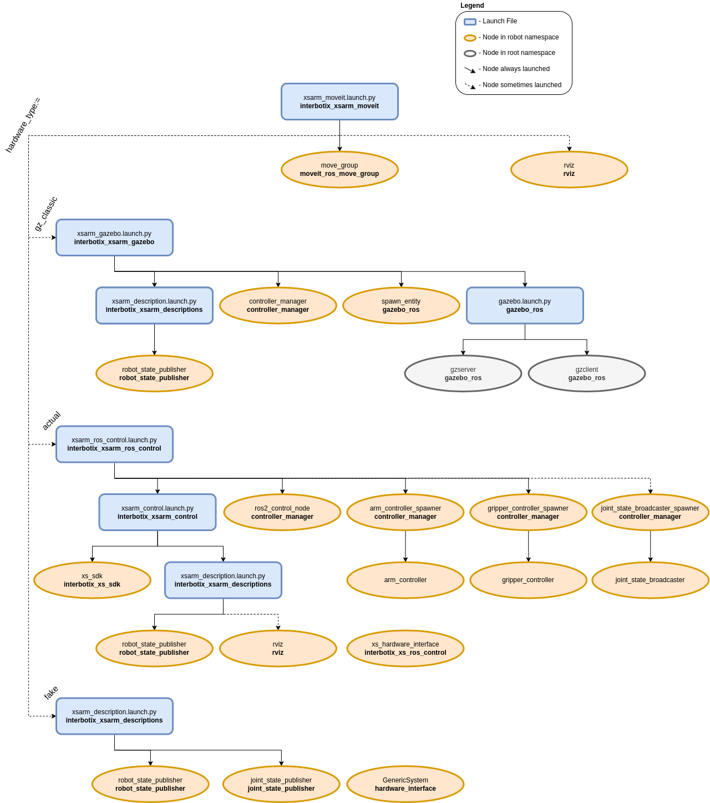

MoveIt2 Configuration
 View Package on GitHub
View Package on GitHub
Overview
This package contains the necessary config files to get any of the many Interbotix X-Series arms working with MoveIt. This package makes use of the FollowJointTrajectory interface which seems to work pretty well in both simulation and on the physical robot. An entrypoint launch file is provided to allow a user to choose whether to have MoveIt work with the simulated version, the physical robot hardware, or a MoveIt-generated fake robot.
Structure
As shown above, this package builds on top of the interbotix_xsarm_sim, interbotix_xsarm_control, and interbotix_xsarm_descriptions packages. To get familiar with those packages, please refer to their documentation. Regarding the MoveIt specific nodes, they are described below:
- move_group - responsible for planning the trajectories needed to achieve a particular arm/gripper pose
- rviz - responsible for displaying the robot model and including the MoveIt MotionPlanning plugin
Usage
To run this package on the physical robot, enter the command below in a terminal (assuming the PincherX-100 is being launched).
$ ros2 launch interbotix_xsarm_moveit xsarm_moveit.launch.py robot_model:=px100 hardware_type:=actual
If running this package on a robot simulated in Gazebo Classic, enter the command below in a terminal (assuming the ReactorX-200 is being launched).
$ ros2 launch interbotix_xsarm_moveit xsarm_moveit.launch.py robot_model:=rx200 hardware_type:=gz_classic
If running this package on a MoveIt generated fake robot, enter the command below in a terminal (assuming the WidowX-250 is being launched).
$ ros2 launch interbotix_xsarm_moveit xsarm_moveit.launch.py robot_model:=wx250 hardware_type:=fake
This is the bare minimum needed to get up and running. Take a look at the table below to see how to further customize with other launch file arguments.
| Argument | Description | Default | Choices |
|---|---|---|---|
| robot_model | model type of the Interbotix Arm such as ‘wx200’ or ‘rx150’. | px100, px150, rx150, rx200, wx200, wx250, wx250s, vx250, vx300, vx300s, mobile_px100, mobile_wx200, mobile_wx250s |
|
| robot_name | name of the robot (typically equal to robot_model, but could be anything). |
LaunchConfig(robot_model) |
|
| external_srdf_loc | the file path to the custom semantic description file that you would like to include in the Interbotix robot’s semantic description. | ‘’ | |
| mode_configs | the file path to the ‘mode config’ YAML file. | LocalVar(‘FindPackageShare(pkg= interbotix_xsarm_moveit) + ‘config’ + ‘modes.yaml’’) |
|
| use_moveit_rviz | launches RViz with MoveIt’s RViz configuration. | true |
true, false |
| rviz_frame | defines the fixed frame parameter in RViz. Note that if use_world_frame is false, this parameter should be changed to a frame that exists. |
world |
|
| rviz_config_file | file path to the config file RViz should load. | LocalVar(‘FindPackageShare(pkg= interbotix_xsarm_moveit) + ‘rviz’ + ‘xsarm_moveit.rviz’’) |
|
| world_filepath | the file path to the Gazebo ‘world’ file to load. | LocalVar(‘FindPackageShare(pkg= interbotix_common_sim) + ‘worlds’ + ‘interbotix.world’’) |
|
| use_sim_time | tells ROS nodes asking for time to get the Gazebo-published simulation time, published over the ROS topic /clock; this value is automatically set to true if using Gazebo hardware. |
false |
true, false |
| base_link_frame | name of the ‘root’ link on the arm; typically base_link, but can be changed if attaching the arm to a mobile base that already has a base_link frame. |
base_link |
|
| use_gripper | if true, the default gripper is included in the robot_description parameter; if false, it is left out; set to false if not using the default gripper. |
true |
true, false |
| show_ar_tag | if true, the AR tag mount is included in the robot_description parameter; if false, it is left out; set to true if using the AR tag mount in your project. |
false |
true, false |
| show_gripper_bar | if true, the gripper_bar link is included in the robot_description parameter; if false, the gripper_bar and finger links are not loaded. Set to false if you have a custom gripper attachment. |
true |
true, false |
| show_gripper_fingers | if true, the gripper fingers are included in the robot_description parameter; if false, the gripper finger links are not loaded. Set to false if you have custom gripper fingers. |
true |
true, false |
| use_world_frame | set this to true if you would like to load a ‘world’ frame to the robot_description parameter which is located exactly at the ‘base_link’ frame of the robot; if using multiple robots or if you would like to attach the ‘base_link’ frame of the robot to a different frame, set this to false. |
true |
true, false |
| external_urdf_loc | the file path to the custom urdf.xacro file that you would like to include in the Interbotix robot’s urdf.xacro file. | ‘’ | |
| hardware_type | configures the robot_description parameter to use the actual hardware, fake hardware, or hardware simulated in Gazebo. |
actual |
actual, fake, gz_classic |
| robot_description | URDF of the robot; this is typically generated by the xacro command. | Command(FindExec(xacro) + ‘ ‘ + LocalVar(‘FindPackageShare(pkg= interbotix_xsarm_descriptions) + ‘urdf’ + LaunchConfig(robot_model)’) + ‘.urdf.xacro ‘ + ‘robot_name:=’ + LaunchConfig(robot_name) + ‘ ‘ + ‘base_link_frame:=’ + LaunchConfig(base_link_frame) + ‘ ‘ + ‘use_gripper:=’ + LaunchConfig(use_gripper) + ‘ ‘ + ‘show_ar_tag:=’ + LaunchConfig(show_ar_tag) + ‘ ‘ + ‘show_gripper_bar:=’ + LaunchConfig(show_gripper_bar) + ‘ ‘ + ‘show_gripper_fingers:=’ + LaunchConfig(show_gripper_fingers) + ‘ ‘ + ‘use_world_frame:=’ + LaunchConfig(use_world_frame) + ‘ ‘ + ‘external_urdf_loc:=’ + LaunchConfig(external_urdf_loc) + ‘ ‘ + ‘hardware_type:=’ + LaunchConfig(hardware_type) + ‘ ‘) |
Notes
Once the MoveIt GUI is fully loaded, take a look at the available planning groups. There should be two of them - one called ‘interbotix_arm’ and the other called ‘interbotix_gripper’. The ‘interbotix_arm’ group contains the joints needed to plan the trajectories for the whole arm (excluding the gripper) while the ‘interbotix_gripper’ group contains the joints needed to plan the trajectories for the gripper (based on the linear distance from the ‘left_finger_link’ to the ‘fingers_link’). There are a few saved poses for each of these groups that be executed such as ‘Home’, ‘Sleep’, and ‘Upright’ poses for the ‘interbotix_arm’ group, and ‘Released’, ‘Grasping’, and ‘Home’ for the ‘interbotix_gripper’ group (‘Home’ just moves the gripper such that the angular position of the motor is at 0 radians). Also, it should be noted that the gripper frame of reference is located at the ‘ee_gripper_link’.
You may not see the Goal State (orange) and Start State (green) queries in the MoveIt by default. To display them, navigate to the MotionPlanning -> Planning Request dropdown in RViz and check the Query Start State and Query Goal State checkboxes.